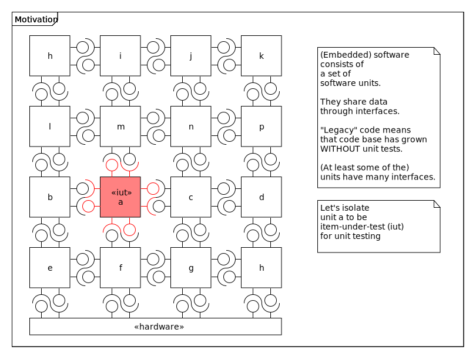
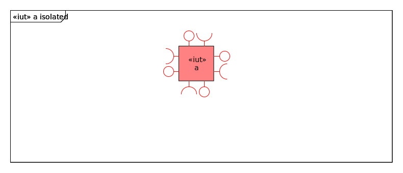
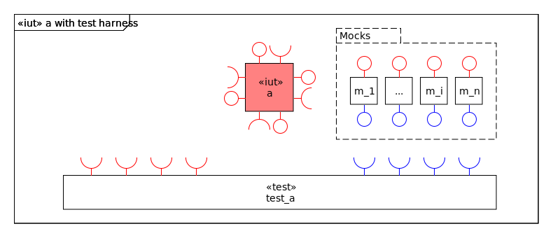
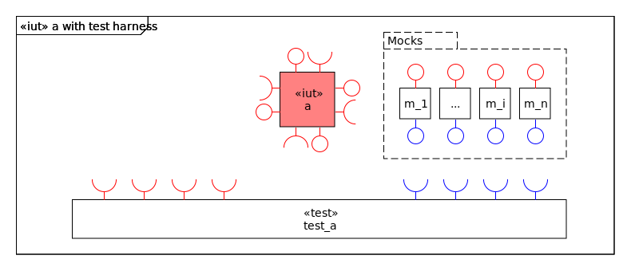
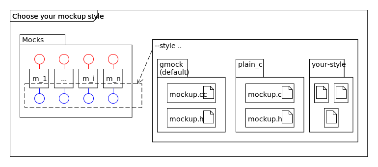

Why HammocKing?
Usecase
(Embedded) software consists of a set of software units. They share data through interfaces.
“Legacy” code means that code base has grown WITHOUT unit tests.
(At least some of the) units have many interfaces.
Let’s isolate unit a to be item-under-test (iut) for unit testing.
Without HammocK
gcc -c -g -MMD -o a.c.obj a.c
gcc -c -g -MMD -o a_test.c.obj a_test.c
gcc -g -o a_test.exe a.c.obj a_test.c.obj
c:/users/manna/scoop/apps/mingw-winlibs-llvm-ucrt/current/bin/../lib/gcc/x86_64-w64-mingw32/12.2.0/../../../../x86_64-w64-mingw32/bin/ld.exe: a.c.obj: in function `a_some_func':
C:\d\repos\hammock\doc\source\usage\examples\one_compile_unit/a.c:6: undefined reference to `b_getX'
c:/users/manna/scoop/apps/mingw-winlibs-llvm-ucrt/current/bin/../lib/gcc/x86_64-w64-mingw32/12.2.0/../../../../x86_64-w64-mingw32/bin/ld.exe: C:\d\repos\hammock\doc\source\usage\examples\one_compile_unit/a.c:8: undefined reference to `c_setY'
collect2.exe: error: ld returned 1 exit status
make: *** [makefile:14: a_test.exe] Error 1
PS C:\d\repos\hammock\doc\source\usage\examples\one_compile_unit>
 
With HammocK
PS C:\d\repos\hammock\doc\source\usage\examples\one_compile_unit> make
gcc -c -g -MMD -o a.c.obj a.c
python -m hammocking --source a.c --plink a.c.obj --style plain_c --outdir . -g
INFO: HammocKing: Will create mockup for function b_getX
INFO: HammocKing: Will create mockup for function c_setY
gcc -c -g -MMD -o a_test.c.obj a_test.c
gcc -c -g -MMD -o mockup.c.obj mockup.c
gcc -g -o a_test.exe a.c.obj a_test.c.obj mockup.c.obj
./a_test.exe
PS C:\d\repos\hammock\doc\source\usage\examples\one_compile_unit>

Google Mock is only the default.
See Mockup styles.
